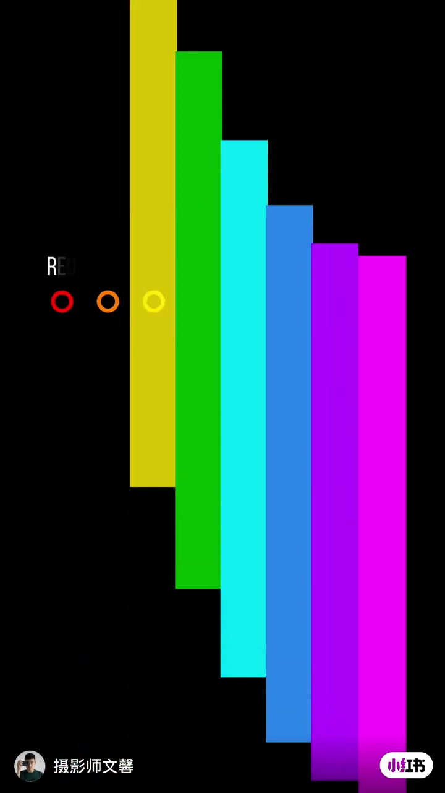
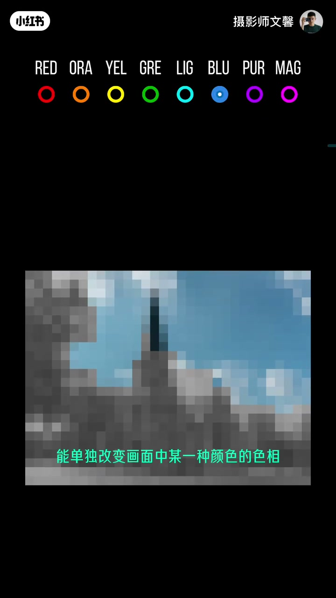
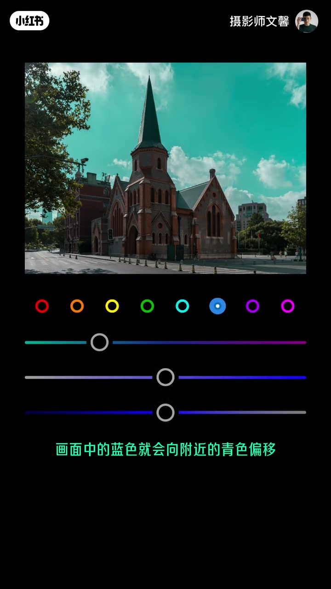
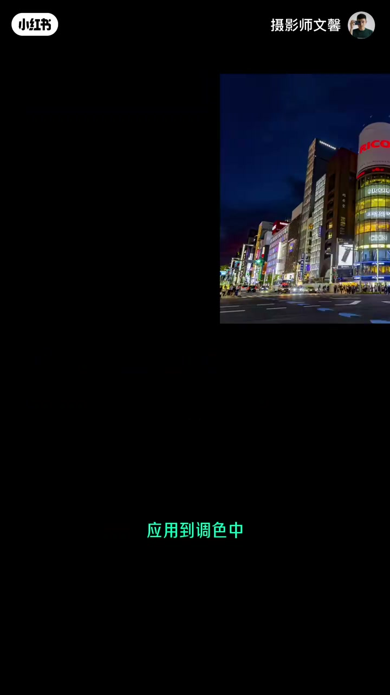
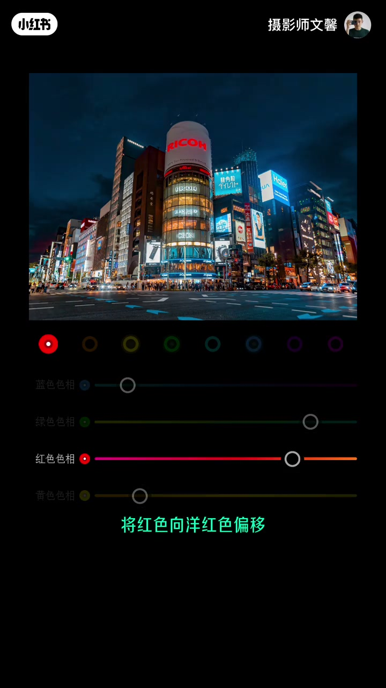
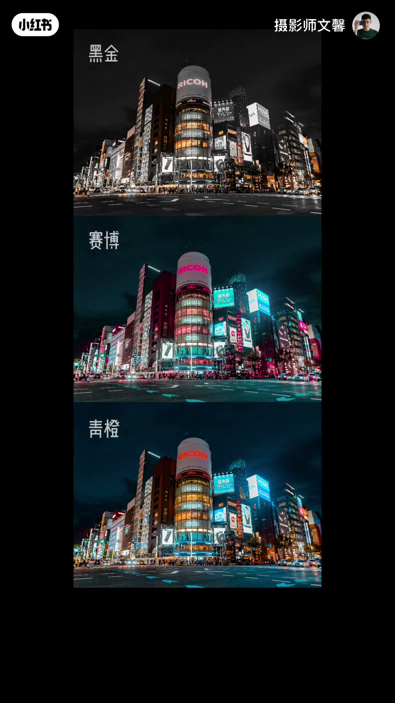
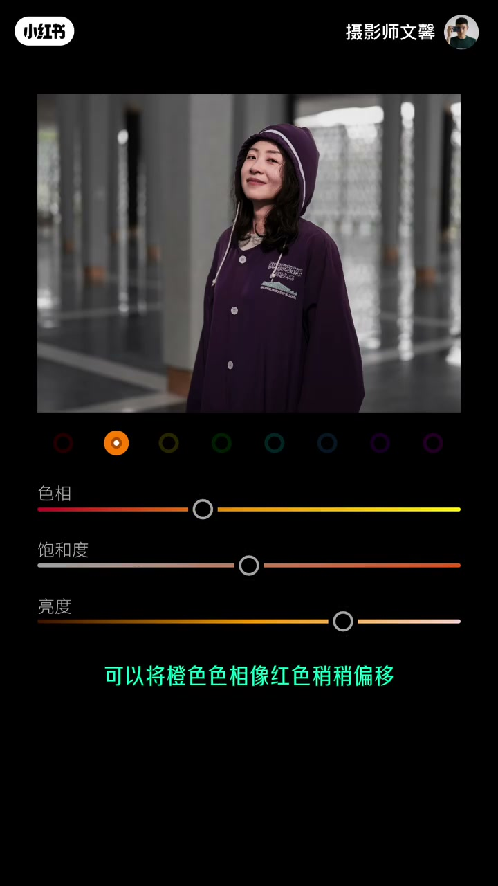
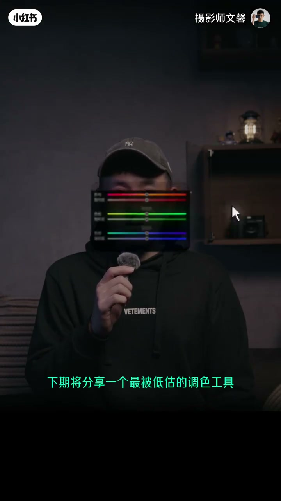

内容要点
「简单调色的秘密，新手必学❗」教程要点：今天说调色 → 一条彩虹加上了阳红色 → 就构成了混色器的八种色彩 → 一张普通的照片把它分成一个个色彩像素；详见正文。
知识结构
今天说调色
而向右拖动则会偏向紫色
那么就得到了黑金色调
- 今天说调色
- 一条彩虹加上了阳红色
- 就构成了混色器的八种色彩
- 一张普通的照片把它分成一个个色彩像素
- 便能对应刚才的色彩进行调解
今天说调色
00:00–00:25今天说调色
今天说调色；一条彩虹加上了阳红色；就构成了混色器的八种色彩；一张普通的照片把它分成一个个色彩像素；便能对应刚才的色彩进行调解；能单独改变画面中某一种颜色的色相；饱和度和亮度；这就是混色器的能力；举个例子 选择蓝色按钮向左拖动色相；画面中的蓝色就会向附近的青色偏移


00:25–00:52而向右拖动则会偏向紫色
而向右拖动则会偏向紫色；降低或提高饱和度也只会单独改变蓝色天空的部分；明度也是如此；因为调色中只要把蓝色和绿色偏向青色；红色和黄色偏向橙色；就能得到常见的青橙色调；而其他不变将红色向阳红色偏移；赛博朋克的橙色色调也就有了；如果是保留橙色饱和度；其他色彩都降低为0


00:51–01:17那么就得到了黑金色调
那么就得到了黑金色调；使用混色器工具调节人像也同样简单；想要皮肤更白可以提高橙色的亮度；更红润可以将橙色色相向红色稍稍偏移；甚至口红的色号也可以通过红色和阳红色的任意搭配；按照个人喜好调节；本期视频就到这里；下期将分享一个最被低估的调色工具；校准；我是文鑫 关注我 慢慢说




口述/画面要点（30段）
结合 Whisper medium 与画面大字整理；专有名词已校对。
今天说调色
一条彩虹加上了阳红色
就构成了混色器的八种色彩
一张普通的照片把它分成一个个色彩像素
便能对应刚才的色彩进行调解
能单独改变画面中某一种颜色的色相
饱和度和亮度
这就是混色器的能力
举个例子 选择蓝色按钮向左拖动色相
画面中的蓝色就会向附近的青色偏移
而向右拖动则会偏向紫色
降低或提高饱和度也只会单独改变蓝色天空的部分
明度也是如此
因为调色中只要把蓝色和绿色偏向青色
红色和黄色偏向橙色
就能得到常见的青橙色调
而其他不变将红色向阳红色偏移
赛博朋克的橙色色调也就有了
如果是保留橙色饱和度
其他色彩都降低为0
那么就得到了黑金色调
使用混色器工具调节人像也同样简单
想要皮肤更白可以提高橙色的亮度
更红润可以将橙色色相向红色稍稍偏移
甚至口红的色号也可以通过红色和阳红色的任意搭配
按照个人喜好调节
本期视频就到这里
下期将分享一个最被低估的调色工具
校准
我是文鑫 关注我 慢慢说